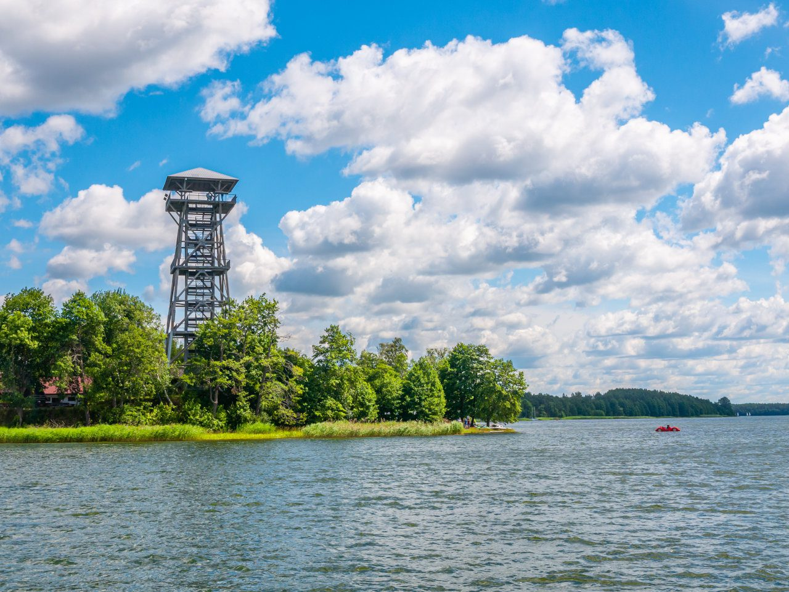

W strategicznym miejscu, tuż obok Stanicy PTTK stoi wieża widokowa we Wdzydzach Kiszewskich, z której możesz zobaczyć rozległy teren Krzyża Jezior Wdzydzkich. Drewniana wieża ma prawie 36 metrów wysokości, ale nie musisz pokonywać całej wysokości “na raz” – zbudowano łącznie trzy platformy widokowe na różnych wysokościach.